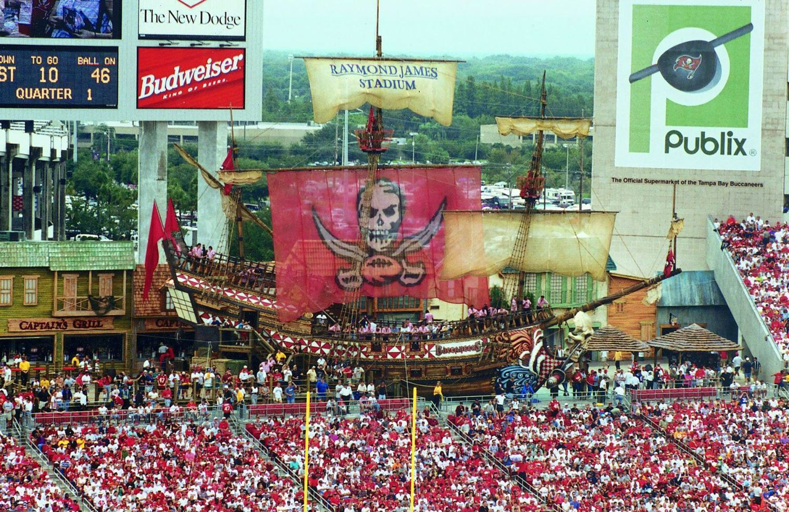

Two examples of video made from real photography, where the people and places in the picture stay the people and places in the film. Nothing is invented to fill the gaps.
The photograph is the starting point. The system treats it as a locked asset: it is the reference for who the person is, and it stays the reference in every shot of the film. The film then builds cinematic scenes around her, with camera moves, a library setting and a voiceover, without redrawing her into someone else.

Nobody flew a drone. The seven photos above are the only source material. The system matches the same features from photo to photo, then builds the in-between frames so the camera appears to glide through the scene, as if a drone had been there. That is useful when a client asks for aerial-style footage after the shoot and there is no time or budget to go back.
These photos were not shot for this. They vary in resolution, lighting and viewpoint. The result is still strong, which says a lot about what planned shooting would give.
With your own images, you could shoot a scene from several deliberate angles and load them in. That gives the system more to match, and you control the final film.
The music is AI generated, so there are no licensing concerns to clear before the video is used.
Real images are loaded as locked assets and used as the reference for every shot. The same person, with the same face, hair and clothes, appears from shot to shot. Logos and seals are added as overlays, not drawn by the AI, so they come out exactly right.
Shots are planned like a film, with framing, camera movement, pacing and voice. The result looks directed, not like a slideshow with a filter on it.
General AI video tends to invent faces, buildings and logos. Locking the real assets takes away the biggest authenticity risk, so the work is far easier to stand behind with a client who is wary of AI.
If you would like to see what this does with your own photography, reply to my email or write to john@jdzsolutions.co.
JDZ Solutions. Private demo prepared for Bob Thompson. Please do not forward or post it.